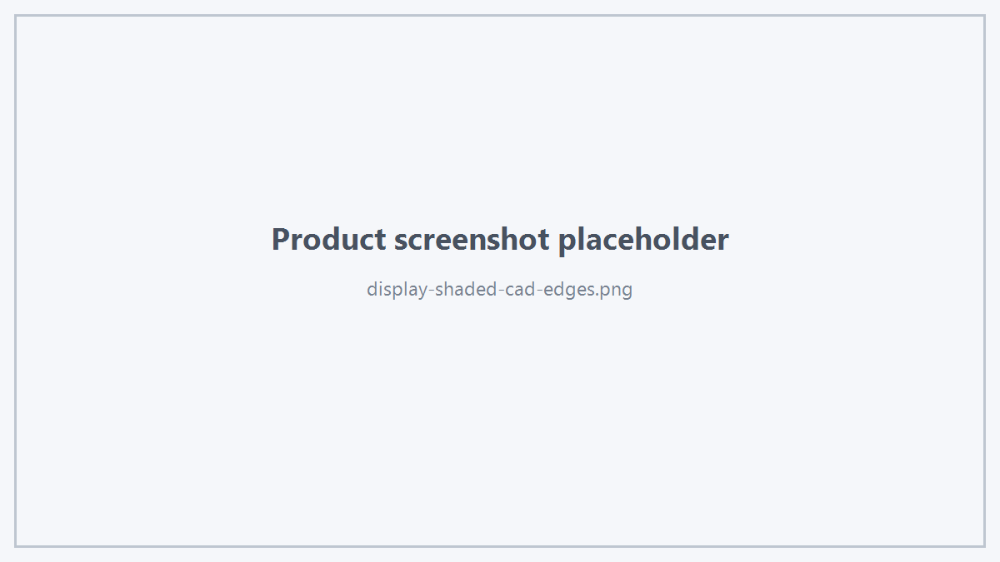
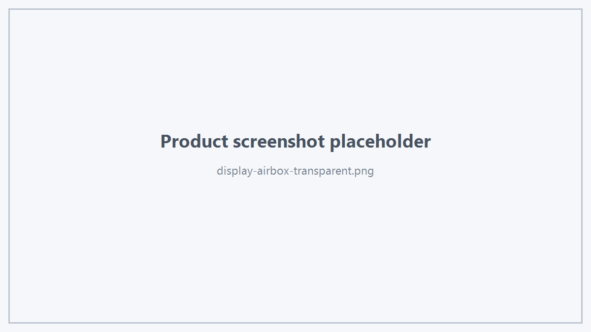

1. 数据入口
正式 CAD 或 Geometry Display 通过：
bool upsertDisplayData(const HtsDisplayMeshData& data);
提交。
2. HtsDisplayMeshData
struct HtsDisplayMeshData
{
std::string sceneType;
int shapeVersion;
std::vector<HtsDisplayObjectData> objects;
};
sceneType
业务可以用它描述当前提交数据的场景类别。
shapeVersion
用于表达业务 Display Data 的版本信息。具体版本策略由业务系统决定。
objects
本次提交的业务显示对象集合。
3. HtsDisplayObjectData
对象包含：
- objectId
- bodyId
- shapeType
- faces
- edges
- vertices
- bodies
- importedMaterials
- visible
objectId 应保持稳定且非空。
4. Face Data
HtsDisplayFaceData 主要包含：
- Object / Body 身份；
- solidTag
- faceTag
- positions
- normals
- barycentric
- indices
- edgeTags
- color
- materialId
- corners
- visible
三角面几何由业务层生成。
Viewer SDK 不负责解析 BREP 或 CAD Kernel Shape。
5. Edge Data
HtsDisplayEdgeData：
- edgeTag
- ownerFaceTags
- polyline
- color
- visible
用于 CAD Edge 等线几何。
6. Vertex Data
HtsDisplayVertexData：
- vertexTag
- position
- color
- visible
7. Body Data
HtsDisplayBodyData 可以描述：
enum class HtsDisplayBodyKind
{
Unknown,
Solid,
Shell,
Sheet,
AirBoxCandidate
};
并携带 Bounds 和拓扑 Tag 集合。
8. Imported Material
HtsImportedMaterialData 提供：
- materialId
- name
- baseColor
- metallic
- roughness
- specular
- opacity
- fromFile
Face 可通过 materialId 引用对象的导入材质。
9. 更新
相同业务对象后续变化时继续使用：
viewer.upsertDisplayData(updatedData);
不要把 clearScene() 作为每次局部更新的默认方案。
10. 删除
viewer.removeDisplayObject(objectId);
批量：
viewer.removeDisplayObjects(objectIds);
11. 显示模式
viewer.setDisplayStyle(HtsDisplayStyle::EngineeringDefault);
当前公开模式包括：
- Shaded
- ShadedWithCadEdges
- TriangleWireframe
- TransparentAirBox
- EngineeringDefault

Shaded With CAD Edges

Transparent AirBox
 1.18.0
1.18.0